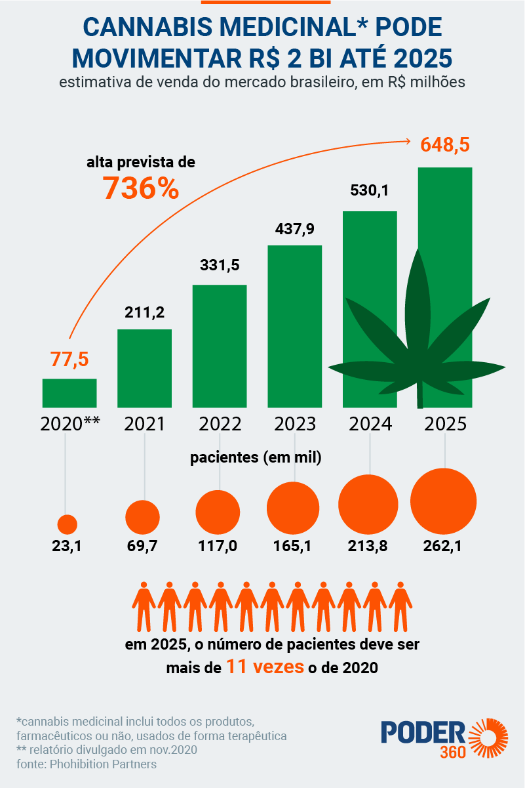

A Ciência por Trás da Cannabis Medicinal
Nos últimos anos, o avanço da pesquisa sobre cannabis medicinal tem levado a descobertas importantes no tratamento de diversas condições médicas. Aqui estão alguns dos estudos mais recentes e suas contribuições para a ciência.
Descobertas Científicas Recentes
- Estudo sobre dor crônica: Pesquisas demonstram que os canabinoides são eficazes no alívio da dor crônica, reduzindo a necessidade de opioides.
- Tratamento para epilepsia: O CBD tem sido amplamente utilizado para tratar crises epilépticas, sendo aprovado pela FDA para essa finalidade.
- Efeitos na ansiedade e depressão: Estudos indicam que a cannabis pode ajudar a reduzir sintomas de ansiedade e depressão, mas requer mais pesquisas para comprovação definitiva.
Gráficos e Dados
Links para Publicações Científicas
Acesse estudos completos sobre o uso medicinal da cannabis: